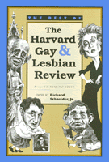

A selection of notable essays from the landmark publication
A selection of notable essays from the landmark publication


 A selection of notable essays from the landmark publication
A selection of notable essays from the landmark publication

|  |
The Best of The Harvard Gay & Lesbian Reviewedited by Richard Schneider, Jr., foreword by Edmund Whitecloth EAN: 978-1-56639-596-0 (ISBN: 1-56639-596-8) |
"Among the deluge of offerings in this burgeoning niche market, this work brings together some of the more sophisticated minds writing today. This collection of reviews, essays, and interviews reads like the liveliest of cafe society debate.... Recommended."
—Library Journal
Among the periodicals targeted to gay and lesbian readers, The Harvard Gay & Lesbian Review stands out as the forum for the serious discussion of contemporary politics and culture. This collection of lively and accessibly written essays, commentaries, and interviews features a stellar line-up of writers and activists. Engaging with a wide range of subjects that particularly interest gays and lesbians, these provocative essays take on contemporary issues of gay rights and identity politics as well as recover the pre- and post-Stonewall literary heritage that gives shape to today's gay culture.
Series Foreword – Robert Dawidoff
Foreword – Edmund White
General Introduction – Richard Schneider, Jr.
Being There
1. My Harvard – Andrew Holleran
2. A Tragedy of Bees – Patricia Nell Warren
3. Russia: "Invitation to a beheading" – Yaroslav Mogutin
4. Remembering the Gay Old Times – Edmund White
Origins of an Orientation
5. The Genetic Theory of Sexual Orientation – Richard Pillard
6. Varieties of Biological Explanation – William Byne and Ed Stein
7. Genes in the Service of Gay Pride – Vernon Rosario
8. Do Women Choose Their Sexual Identity – Karla Golden
9. Where Gay Boys Come From – Camille Paglia
Early Outbreaks
10. Lesbians in Ancient Rome – Bernadette Brooten
11. A Gay Civil War Novel Surfaces – Douglas Shand-Tucci
12. Review of George Chauncey's Gay New York – Robert Dawidoff
13. Deciphering the Gay Halocaust – Lev Raphael
14. Hollywood Watering Holes – Lester Strong
The Gay Decades
15. Lesbian New York – Karla Jay
16. The Real Violet Quill Club – Felice Picano
17. Behind the Door at Red Dora's – Gabrielle Glancy
18. Reverberations of "The NEA Four Affair" – Holly Hughes
Literary Heritage
19. On Emily Dickinson – Martha Nell Smith
20. On Willa Cather – Marilee Lindemann
21. Stein's Style – Renate Stendhal
22. Review of Auden – Richard Howard
23. Five Houses of Gay Fiction – Reed Woodhouse
24. Review of Saphire's Push – Cheryl Clarke
25. David Leavitt's Inner Child – Michael Schwartz
26. Interview – Edward Albee
On Liberation Strategy: An Exchange
27. Three Articles Exerpted – Barney Frank
28. Reply to Frank – Rich Tafel
29. Interview – Urvashi Vaid
30. Interview – Larry Kramer
Assimilation Versus Ghettoization: An Exchange
31. Open Letter to Bruce Bawer – David Bergman
32. Reply to Bergman and Bergman's Rebuttal – Bruce Bawer
Postmodernism and its Discontents
33. The Perils of Postmodernism – Richard Mohr
34. The Politics of Sexual Identity – April Martin
35. Review of Boswell's Same Sex Marriages – Denise Kimber Buell
36. Review of David Halperin's Saint=Foucault – Andrew Holleran
About the Contributors
Richard Schneider, Jr., is the editor of The Harvard Gay & Lesbian Review.
Sexuality Studies/Sexual Identity
American Subjects, edited by Robert Dawidoff.
The American Subjects series, edited by Robert Dawidoff, will introduce readers to unfamiliar areas or figures in American culture. All of the titles in this series will be the first on their particular subject. Each will tell an unfamiliar story and will emphasize the cultural side of how Americans have lived and what they have created or thought.
© 2015 Temple University. All Rights Reserved. This page: http://www.temple.edu/tempress/titles/1395_reg.html.